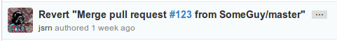

Being human, developers tend to be motivated by reward and positive re-enforcement. We at gitSHOCK believe that a happy programmer is a complacent programmer, and as such, a happy programmer produces second rate code.

You probably felt pretty good about yourself when that pull request was merged. Sadly, at some point between then and now, it was decided that your contribution actually represented a net loss for the project. In effect, you are now STEALING self satisfaction.
We at gitSHOCK have a solution. Rather than motivating yourself by maintaining interest and investment in the success of a project, simply install gitSHOCK on your workstation!
With a handy electrical jolt, gitSHOCK returns balance to the universe. Once installed, gitSHOCK monitors your contribution history and the repositories that you have contributed to. Every time gitSHOCK detects that your code has been removed from a project, the power of electricity will ensure you become a better developer!
Never write bad code again, with gitSHOCK!